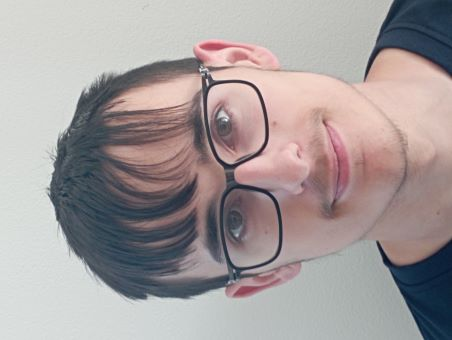
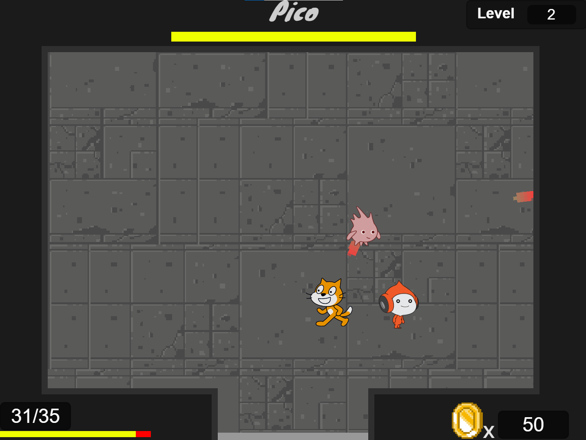

Portfolio
BRUNET Lucas

Mes projets (Scratch) :
Scratch Dungeon

Après Minecat, j'ai voulu créé un jeu qui se voulait aussi être capable de créé un monde/niveau de façon aléatoire,
mais cette fois-ci je voulais que mon jeu ait un gameplay plus précis, avec un réel objectif donné au joueur : finir le plus de niveau possible
Pour se faire, j'ai créé Scratch Dungeon, un jeu d'exploration de donjons où des ennemis rôdes dans chaque salles.
Notre personnage repris dans la bibliothèque d'asset fourni par Scratch, pourra devenir de plus en plus puissant pendant la partie, en récupérant des powerups.
Les donjons créés procéduralement vont être de plus en plus long au fur et à mesure que l'on avance dans le jeu, avec des ennemis qui auront également des statisques
plus élevées (que ce soit leur force, vitesse, points de vie, etc).
Plus d'informations sur ce projet ici.
Mes projets (Python) :